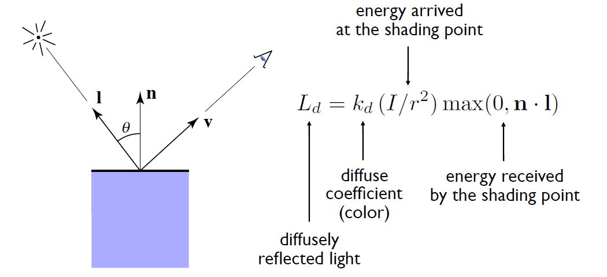
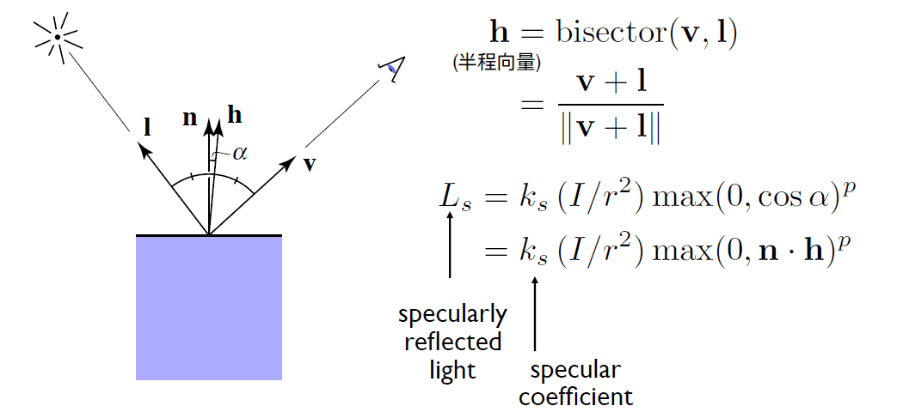
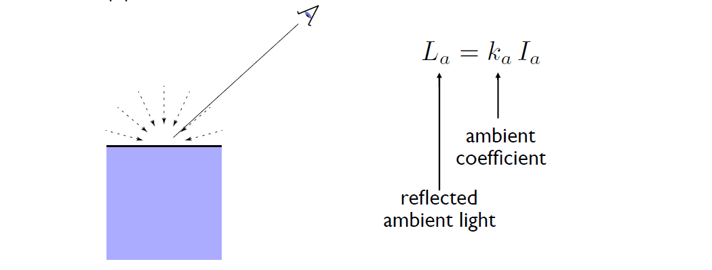
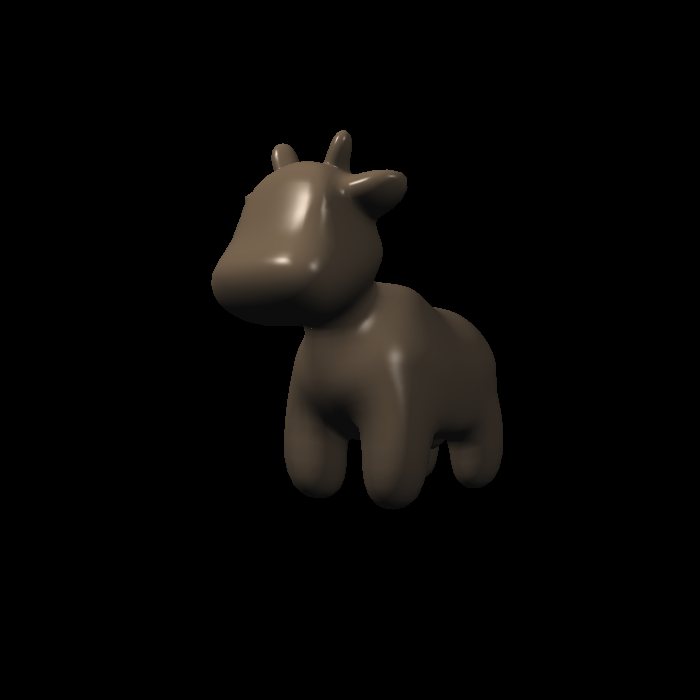
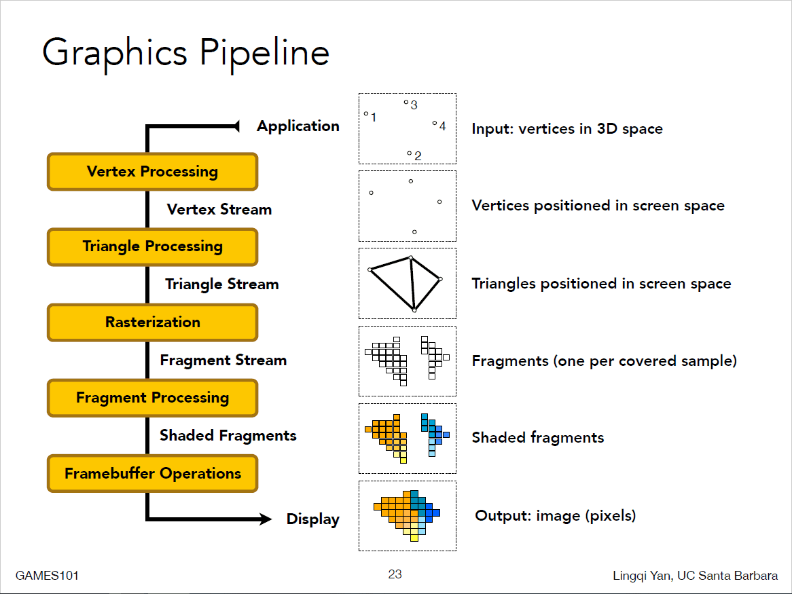
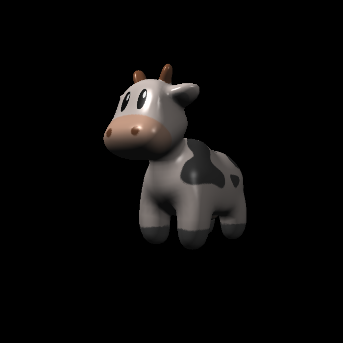
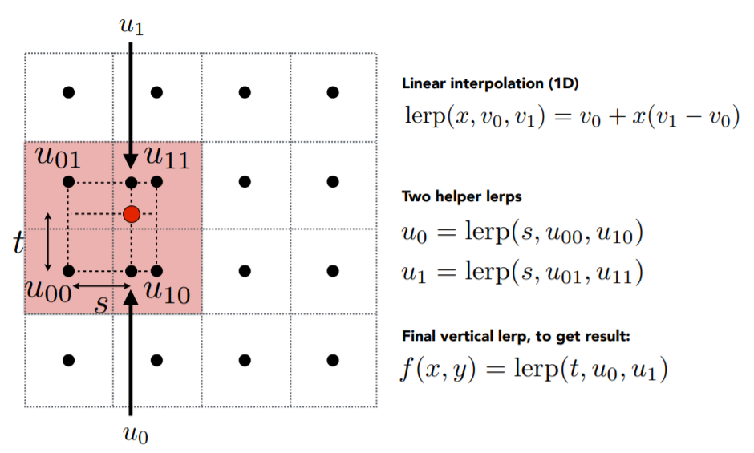
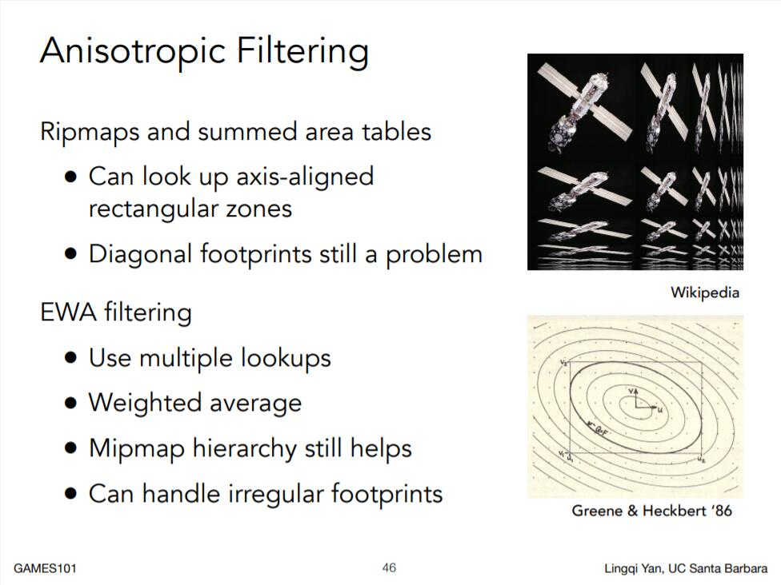

Lambertian (Diffuse) Term: 
Specular Term (Blinn-Phong): 
Ambient Term: 
$$ L = L_d + L_s +L_a $$ 
This picture from my teacher's slide explained it very well: 

Bilinear Interpolation (if the texture is too small):  Mipmaps and Anisotropic Filtering(if the texture is too large): 
Uses the same texture as in bumping mapping Actually moves the vertices